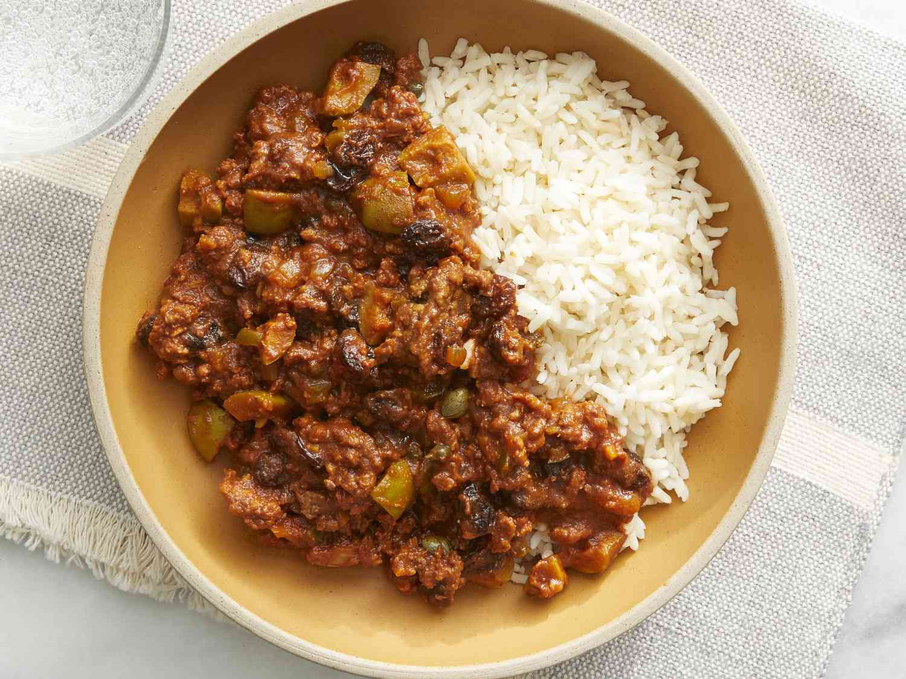

Picadillo

Description
This dish consists of ground meat simmered in a tomato sauce with olives, raisins, and (optionally) capers. Commonly served with rice.
Ingredients
- 1 tablespoon cooking oil
- 1 onion, chopped
- 1/2 green bell pepper, chopped
- 1 clove garlic, minced
- 1 pound ground beef
- 1 (8 ounce) can tomato sauce
- 6 large pitted green olives, quartered
- 1/2 cup raisins
- 1 tablespoon capers (optional)
- 2 (1.4 ounce) packages sazon seasoning
- 1 tablespoon ground cumin
- 1 teaspoon white sugar
- Salt, to taste
Steps
- Heat olive oil in a skillet over medium heat; cook and stir onion, bell pepper, and garlic, onion in the hot oil until softened, 5 to 7 minutes.
- Add ground beef into the skillet; cook and stir until crumbly and completely browned, 7 to 10 minutes.
- Stir tomato sauce, olives, raisins, capers, cumin, sazon seasoning, sugar, and salt into the ground beef mixture.
- Cover the skillet, reduce heat to low, and cook until the mixture is heated through, 5 to 10 minutes.